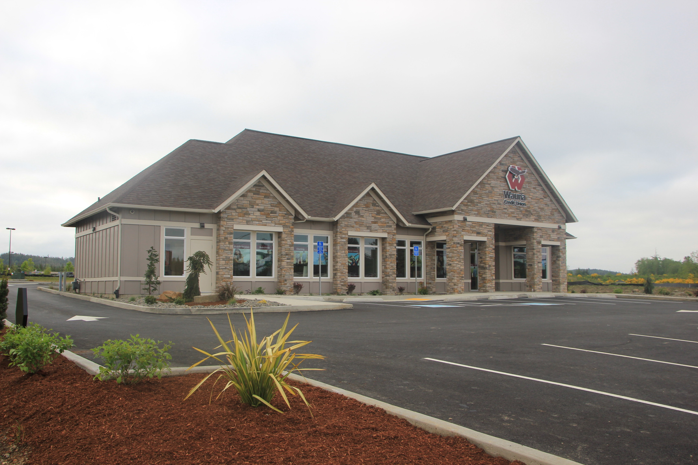
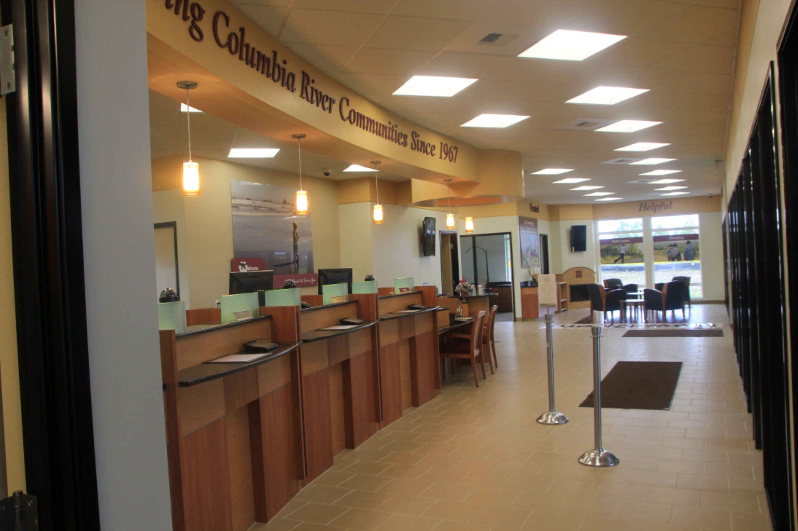

- Home
- General Contracting
- Design Build
- Construction Management
- Restoration
Wauna Federal Credit Union — Warrenton Branch
Project: Warrenton Wauna Federal Credit Union
Client: Wauna Federal Credit Union
Year Completed: 2013
Location: Warrenton, OR
Architect: Partin & Hill Architects, LLC — Doug Circosta
Project Size: 3,445 Sq. Ft.
Construction Cost: $883,606
Construction Budget: $838,637
Subcontractor References:
-
Rubensteins Contract Carpet, Portland, ORPete Kingsbury– 503-224-1007
-
JP Plumbing Inc., Astoria, ORJim Forrester - 503-325-2830
-
P&L Johnson Mechanical Inc., Astoria, ORDale Johnson - 503-325-2180


This project consists of the construction of a new credit union with drive-thru services and on-site customer and employee parking.
The finishes for the interior were high end and required coordination and attention to detail. The exterior site development included the construction of a decorative retaining wall built with large natural rocks.